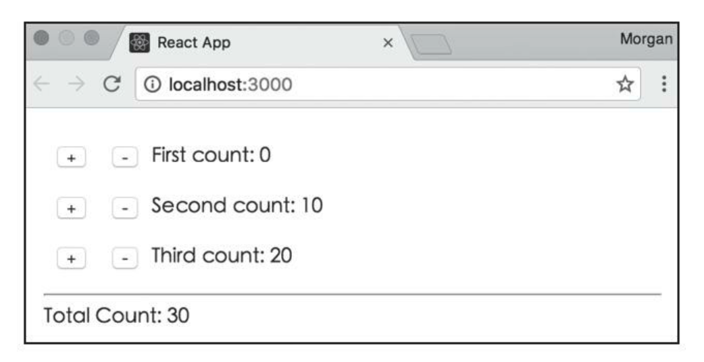
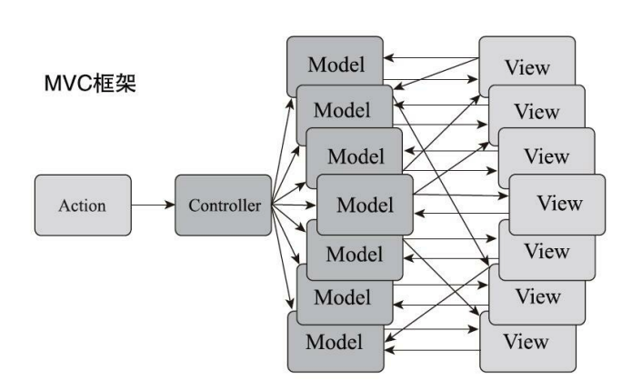
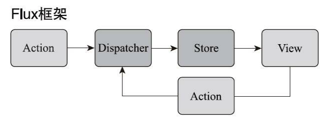

最近把《深入浅出React和Redux》这本书给差不多看完了，依稀记得还是在大三考试月间隙小钟迅速过掉的一本书，当时我还在玩泥巴。
虽然豆瓣评分不算高，但我感觉这本书通篇看下来还是蛮有收获的，除了中间件那块儿有些没理解到，其他都还蛮娓娓道来的，对现阶段只会用却不求甚解(此处贬义)的我来说也算是加深了一些原理上的理解。
再者，浓厚的 peer pressure 令人想要逃离，但并不能因此就转头跑向另一个极端，纯粹的学习还是很快乐的，感谢 mentor 及时的纠正。（不过这本书确实是略过时了，且内容很基础，所以就当图一乐吧，真学技术还得看官网。）
基础使用
生命周期
或许是 React15 那会儿的。
装载(mount)
组件第一次渲染的过程就是装载，依次会调用下面几个函数，也称生命周期函数：constructor、getInitialState、getDefaultProps、componentWillMount、render、componentDidMount。
- constructor
创造一个类的实例自然会调用这个方法啦，一般会在构造函数里做这么些事情：初始化 state（毕竟其他生命周期函数都有可能有 state，那就在第一个生命周期函数里初始化，合理）；给成员函数绑定 this（毕竟类的成员函数在执行时 this 并不绑定实例，constructor 中的 this 则一定是当前实例）。
- getInitialState / getDefaultProps
仅当在 React.createClass() 创造的类中这两个函数才有用，它们的返回值分别可以作为 state 和 props 的初始值，函数只会在装载期被调用一次。
1 | // 旧语法 |
- render
一个 React 组件可以不实现其他的函数，但一定要有 render 的实现，因为 React.Component 对其他都有默认的实现。render 函数需要返回 JSX，React 来操作渲染过程，如果什么都不需要那就返回 null / false，React 就知道这次不需要渲染任何 DOM 元素。我们应该让 render 函数是一个无副作用的纯函数，完全根据 state 和 props 展示内容。
- componentWillMount / componentDidMount
这俩函数分别在 render 前后被调用，一般不怎么用 will，因为这个时候即将装载了，即使调用 setState 也不会引发重新绘制，一切都迟了。也就是说，所有需要在 componentWillMount 中做的事情都可以放在 constructor 中做。其实它的存在主要是为了和 did 对称。
did 函数被调用的时候，不仅 render 函数已经被执行完毕，render 返回的 JSX 也引发了渲染并被挂载到 DOM 树上了，这个时候可以放心地获取渲染出来的任何 DOM。值的一提的是，did 和 render 并不是紧挨着的，render 只是返回 JSX，什么时候渲染则是由 React 库决定的。举个例子，一个父组件内含三个子组件，那么整个父组件的装载时机是这样的：
1 | constructor called: child 1 |
因为只有知道了每个子组件的渲染内容并把它组合起来，才能知道如何产生对应的 DOM 修改。
俩函数还有个区别：will 可以在服务器端和浏览器中被调用，did 则只能在浏览器中被调用。有一种解释是，服务器端渲染产生的是字符串，不会产生 DOM 树，即不可能发生“装载”过程，那自然就不会有 didMount 了。
更新(update)
组件装载后一般并不是一成不变的，而是会随用户操作而变化。当 props 或 state 变化时，就会引发组件更新，依次调用下面的函数：componentWillReceiveProps、shouldComponentUpdate、componentWillUpdate、render、componentDidUpdate。
- componentWillReceiveProps(nextProps)
这个函数被调用的时机有：自己 props 改变时、父组件 render 被调用时(无论传给子元素的 props 是否改变)。
像下面的例子，当我们点击按钮后，会强行引发重新绘制，即使传给子组件的 props 完全没有变化，也会调用子组件的 componentWillReceiveProps。
1 | class Parent extends React.Component { |
1 | class Child extends React.Component { |
1 | enter Parent render |
通过 setState 触发更新时并不会调用此函数，因为此函数适用于根据 props 来计算是否要更新 state，也就是 willReceiveProps -> setState，如果 setState 也会触发 willRecieveProps，那就死循环了。
像下面的例子，点击按钮后，子元素自己 setState，并不会调用 willRecieveProps。
1 | class Child extends React.Component { |
1 | enter render First |
- shouldComponentUpdate(nextProps, nextState)
render 用来决定渲染什么，这个函数则决定组件什么时候不需要渲染(通过返回不同布尔值)。更新过程中，React 库首先会调用此函数，如果返回 true，则接着调用 render 继续更新过程；如果返回 false，则立刻停止更新过程。此函数方便我们自定义重新渲染的条件，使用得当的话可以有效地减少额外渲染、提升性能。
比如我们给子组件复写一下这个方法，只有当自身的 props 或 state 变化时才 render，这时点击父组件的按钮进行 forceUpdate，就不会触发子组件的 render 了。
1 | class Child extends React.Component { |
1 | enter Parent render |
- componentWillUpdate / componentDidUpdate
如果 shouldUpdate 返回 true，就会依次调用 willUpdate、render、didUpdate。和 mount 那边不同，update 的 will 和 did 俩函数都可以在服务器端和浏览器端的更新过程中被调用。不过呢，一般服务端渲染不会经历更新过程，因为它只需要产出 HTML 字符串，一个装载过程足够返回 HTML 字符串了。
卸载(unmount)
卸载过程只涉及一个函数！componentWillUnmount，这边就没有诸如 didUnmount 的函数了，毕竟卸载完就结束了，没有什么需要卸载完再做的事情。此函数处理的事情会和 componentDidMount 相对应，比如 didMount 中如果用非 React 的方法创造了什么 DOM 元素，可以在 willUnmount 中清理，防止内存泄漏。
Props 和 State 局限性
React 最基础的用法相信所有人都不陌生，UI=render(data)，一个组件需要做的就是拿到数据、进行渲染。state 和 props 就组成了数据这部分，props 是组件对外的不可改变的接口，state 是组件对内的可变的内部状态。
父组件向子组件传递信息，可以通过 props，那么子组件向父组件传递信息呢？其实也可以用 props，通过调用父组件传来的方法，改变父组件的 state 等。
比如我们要实现下面这个计数器。

1 | // 父组件 |
1 | // 子组件 |
这里功能实现上没问题，但仔细想想会觉得存在可以改进的地方。
首先很明显，每个子组件有自己的 count state，父组件也有自己的 sum state，这里出现了数据重复，会存在数据不一致的问题。比如某个子组件的修改没有通知到父组件，count 和 sum 就不一致了，应该相信谁呢？
其次，使用 props 来沟通的方式会造成多层级的传递。比如我只是最内层子组件需要和最外层父组件沟通，那所有中间层级都要传递这个 props，尽管中间组件完全不需要它。
之所以产生这个情况，其实就是高内聚、低耦合的追求带来的副作用。每个组件自己维护自己的状态，没有一个共享的空间去存放共享的状态。那为了解决这个问题，我们可以使用 context 或 redux，下面讲。
Flux
Flux 在 2013 年和 React 同时被推出，推翻了 MVC 框架，提出了一种新的数据流转管理方式，也就是单向数据流。直接看图吧。


MVC 感觉我自己也接触过，类似基础的 Spring Boot 应用？服务端的 MVC 还算是比较单向的数据流：请求到达 controller、路由控制修改对应 model、数据库的新数据产生新 view、返回给浏览器新 view，此时这个请求生命周期里的 controller、model、view 就可以销毁了。
不过书里表示，浏览器端的 MVC 框架中，model 和 view 还会继续存在于浏览器中，引诱开发者贪图方便而让现存的 model 和 view 直接对话，而不通过 controller。理论上 controller 应该是核心，model 要更新 view 时应该通过 controller，view 要传递消息给 model 时也应该通过 controller。这下数据流就混乱起来了，这不好。
Flux 则类似一个更严格的数据流控制。action 是负责驱动 dispatcher 的 JavaScript 对象；dispatcher 负责处理动作分发，维持 store 之间的依赖关系(可能是指旧 store 和新 store 之间的关系?)；store 负责存储数据和处理数据相关逻辑；view 就是视图啦。
如果要对照着看的话，dispatcher ≈ controller、store ≈ model、view ≈ view、action ≈ 请求。如果我想要多支持一种能够处理的请求，在 MVC 里，我就会多写一个 controller；在 Flux 里，则是多定义一个 action。
flux 使用例子
用之前那个计数器的例子。对于用惯了 Redux 的选手来说，应该还蛮有新意的！
dispatcher
几乎所有应用都只需要一个 dispatcher，所以我们用一个全局的就可以了，它负责派发 action。
1 | // src/AppDispatcher.js |
action
action 是一个普通的 JavaScript 对象，表示一个动作，它必须带有 type 字段。应用中一般会有两种相关文件，一种纯定义这个 action 对象有几种 type，一种则是 action creator，可以理解为返回 action 的一个 helper function。不过在实际实践中，后者通常并不是返回纯 action，而是产生并派发 action。
1 | // src/ActionTypes.js |
1 | // src/Actions.js |
store
store 存 state，同时还要接受 dispatcher 派发的 action，根据 action 看要不要更新 state。这里我们定义两个 store，一个负责各个计数器，一个负责总计数。
1 | // src/stores/CounterStore.js |
为了建立 store 和 view 的联系，这里用了消息的方式，因此这里的 store 是一个 eventEmitter。它的 emit 可以广播事件，on 可以定义特定事件的处理函数，removeListener 可以删除事件处理函数。这里封装了下，不过效果都一样。
store 还需要「注册」到 dispatcher 实例上才能真正发挥作用，不然就没有办法改 store 了，所以有如下代码。
1 | // src/stores/CounterStore.js |
当通过 register 将一个回调注册到 dispatcher 上时，所有派发给 dispatcher 的 action 都会传递到这个回调中，这个回调就会被调用。
另一个 SummaryStore 也类似(emit、on、remove 等属性)，不同点在于，summary 最好不要存储数据(数据不一致问题，还记得吗~)，这里用一个 get 方法，可以让使用者在调用的时候再去计算值，保证能够用到最新的求和。
1 | function computeSummary(counterValues) { |
可以看到，此处虽然叫做 store，但它不是真正的 store，只是提供获取数据的方法，去获取另一个 store 的值。那就有依赖关系啦，这也可以体现在 SummaryStore 的 dispatcher 上。
1 | SummaryStore.dispatchToken = AppDispatcher.register((action) => { |
这里 waitFor 用来干嘛的呢？因为 action 会被派发给所有回调函数，而且这个顺序是不确定的，因此需要显式考虑先后顺序问题。比如一个 INCREMENT action 被派发了，假如 SummaryStore 的回调先被调用，那就会先 emit 这个变化，getSummary 被调用，但此时 getSummary 中使用的 CounterStore 中保存的数据还是之前的数据，因为 INCREMENT action 还没被派发到 CounterStore。waitFor 就是解决这个问题的，waitFor 告诉 dispatcher，当前的处理必须要暂停，直到 dispatchToken 代表的那些已注册的回调函数执行结束才可以继续。
也可以看到这种模式有个缺点，那就是 dispatcher 没法让调用者在 register 的时候选择只监听特定的 action，在自己内部再去处理是否关心这个 action 的问题。
view
这里需要关注三个部分的内容，用 store 初始化、store 变化时跟着变、view 变化时改变 store(只能通过派发 action 的方式来改哦!)。
1 | // src/views/ControlPanel.js |
可以看到这里没有给 Counter 通过 props 传递初始值了，因为我们的初始值都在 CounterStore 里。
1 | // src/views/Counter.js |
Summary 组件类似，只不过上面没有任何 view 的交互功能，因此不需要派发 action，那 Flux 的例子就到此为止！相比起来，用了 Flux 后，View 就是完全由 Store 驱动的了，数据是单向流动的，即使是通过 view 去改变 store，也是走了正规的一条路径，这种约束是一种很好的限制，避免了数据流混乱的问题。
Flux 缺点
Flux 依然有它自己的缺点，针对这些缺点才知道改进的框架 Redux 都改了些啥。
Store 之间的依赖关系
上面的例子中，当两个 store 有依赖关系的时候，必须使用 Dispatcher 的 waitFor 函数，SummaryStore 对 action 类型的处理，依赖于 CounterStore 已经处理过了。所以必须通过 waitFor 函数告诉 Dispatcher，先让 CounterStore 处理这些 action 对象，搞定之后再让 SummaryStore 继续。
SummaryStore 是如何标识 CounterStore 的呢？靠的是 register 函数返回的 token，这个 token 是 CounterStore 控制的(也就是 CounterStore 在 register 的时候自己把这个 token 作为对象的一个属性了)，那要求：
- CounterStore 必须要主动公布 register 到 dispatcher 时的 dispatch token
- SummaryStore 必须要在代码里建立对 CounterStore 的 dispatch token 的依赖
Flux 确实已经通过此机制解决了依赖的问题，但古语道(不是，最好的依赖管理是不让依赖产生。
难以进行服务端渲染
服务器渲染输出的不是 DOM 树，而是 HTML 字符串。在 Flux 中，Dispatcher 全局唯一，每个 Store 也全局唯一，这对于浏览器端完全没问题，因为一个浏览器只服务于一个用户，但对于服务器端来说，问题就很大了。由于它要同时接受很多用户的请求，如果每个 Store 都是全局唯一的对象，那么不同请求的状态就乱套了。Facebook 也深知这一点，因此从未尝试将 Flux 应用于服务端。
Store 混杂了逻辑和状态
我们的 Store 对象中，把「数据」和「处理数据的逻辑」放到了一起，看似有良好的封装性，实则有些不便利。比如有些需要「动态替换 Store 逻辑同时保持 Store 状态」的场景，flux 的这种设计就不能满足此需求。
这种场景有很多，比如开发时，开发者想验证某个指定状态下 Store 逻辑是否存在 bug，肯定要保持状态不变，不断地修改处理逻辑的代码；再比如现网下，有时需要根据用户属性来动态加载不同的模块，且同时希望能在不修改应用状态的前提下重新加载应用逻辑(即热加载 hot load)。Redux 可以满足我们的这些需求。
下一篇就让我们走进 Redux 的世界吧。
PS：发现 hexo commit 里 username 不对，改了下 config 文件重新部署，发现它居然把所有的 commit message 给删了…